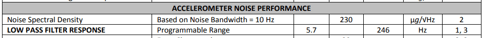

Task 1: Set up the IMU
I connected the IMU to my board's Qwiic connector.
By installing the Arduino library 'SparkFun 9DOF IMU Breakout - ICM 20948', I can run the Example1_Basics. According to the Pimoromni, its I2C address can be 0x68/0x69(cut trace). The trace of the IMU I got is not cut, so the address should be 0x68. Since AD0_VAL defines as the value of the last bit of the I2C address, it should be 0 to makes it not be underflow.
As shown in the video, the built-in LED blinks 3 times slowly on start-up to indicate the board is running.
When I rotate the board, the acceleration data changes mainly to show the direction of the gravity, as shown
in the above video and figure 3. As I rotate the IMU along the x-axis, the degree of acc_z gradually decreases
from +1g to 0g, while acc_y becomes +1g and acc_x stays the same. The gyroscope data changes to show the
rotational velocity. As I rotate faster, the value of gyro gets bigger and vice versa.
When I flip the board, the value of the accelerometer reverse along the axis of rotation. As shown in figure 4, when I flip the IMU along the x-axis, the degree of acc_z changes from +1g to -1g. The gyroscope shows rapid changes in angular rate. For example, the figure shows the rapid change in gyro_z.
When I accelerate along a certain axis, the accelerometer reading in that axis gets bigger. The gyroscope reading doesn't change much because there is no rotating IMU. As shown in figure 5, I accelerate the IMU along the '-x-axis' and the acc_x gets bigger, while the gyro value changes only slightly, probably due to vibration and noise.
Task 2: Accelerometer
Convert to pitch and roll only from accelerometer data
By using the formula: and the pitch and roll can be calculated. As the lecture, I define the clockwise direction around the X-axis as the positive pitch direction; the clockwise direction around the Y-axis as the positive roll direction; and the clockwise direction around the Z-axis as the positive yaw direction, as shown in Figure 2. I placed the imu at -90,0,90 degrees along the pitch/roll direction, recorded 996 data for each placement, plotted the following plots and calculated the mean and accuracy.
As shown in the left plot in the figure 5, the pitch value at -90 degree are -86.76916.
As shown in the middle plot in the figure 5, the pitch value at 0 degree are -0.00567.
As shown in the right plot in the figure 5, the pitch value at +90 degree are 87.02103.

As shown in the left plot in the figure 6, the roll value at -90 degree are -87.15554.
As shown in the middle plot in the figure 6, the roll value at 0 degree are -0.05848.
As shown in the right plot in the figure 6, the roll value at +90 degree are 86.37310.
The data and code for above calculation and plot is here.
I can use two-point calibration for pitch based on the points (-90, -86.76915747241726) and (90, 87.0210330992979). The result formula is
.
For roll, the two points I used are (-90, -87.1555421686747) and (90, 86.37309929789367). The result formula is
.
The following 6 plots in figure 7 show the pitch and roll value after two point calibration. The mean value of IMU's pitch and roll data are more closed to the correct value.
Fourier Transform & Complimentary low pass filter
I collected 996 accelerometer data without large noise around, the data in time domain and in frequency domain plot are shown in the figure 8 and figure 9. Then, I collected 996 accelerometer data with large noise around(knock the table), the data in time domain and in frequency domain plot are shown in the figure 10 and figure 11. As you can see in the figure 11, the cutoff frequency should be around 40Hz.
However, after applying the low pass filter as following code, there's little change in pitch and roll in the frequency domain, as shown in figure 13.
The code in python used to collect the serial data and analyze is shown in the following script.
Discussion on result
The reason the simple low-pass filter I wrote doesn't work is probably because there is a filter built into the chip, as shown in Figure 14. This image can be found in the ICM-20948 datasheet.
Gyroscope
Compute pitch, roll, and yaw only from gyroscope data
Complimentary filter
Sample Data
Speed of sampling discussion
Collect and store time-stamped IMU data in arrays
Discussion
Collection and send via BLE
Task 2
---
Task 3
code sample .